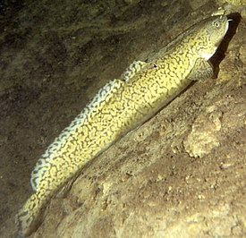

Налим
Налим — единственный вид в роде налимы, относящийся к подсемейству Lotinae[4]. Российские исследователи относят род налимы к семейству налимовых (Lotidae Bonaparte, 1837)[5].
Одни исследователи считают вид монотипическим, другие выделяют 2—3 подвида:
Lota lota lota (Linnaeus, 1758) — обыкновенный налим, обитающий в Европе и Азии до реки Лены[6];
Lota lota leptura (Hubbs et Schultz, 1941) — тонкохвостый налим, чей ареал включает Сибирь от реки Кара до Берингова пролива, арктическое побережье Аляски к востоку до реки Маккензи[7];
Lota lota maculosa (Lesueur, 1817) — подвид, обитающий в Северной Америке[8].
Тело удлинённое, невысокое, округлое в передней части и сильно сжатое с боков — в задней. Голова уплощена, её длина превышает максимальную высоту тела. Глаз маленький. Рот большой, полунижний, нижняя челюсть короче верхней. На челюстях и головке сошника имеются мелкие щетинковидные зубы, но на нёбе их нет. На подбородке имеется один непарный усик (составляющий 20—30 % длины головы) и пара усиков на верхней челюсти[6][9].
Окраска тела налима зависит от характера грунта, прозрачности и освещённости воды, а также от возраста рыбы, поэтому она довольно разнообразна: чаще тёмно-бурая или черновато-серая, светлеющая с возрастом. На боках тела и непарных плавниках имеются большие светлые пятна. Форма и размер пятен могут варьировать. Брюхо и плавники светлые[6][9].
Спинных плавников два: первый из них короткий, второй — длинный. Анальный также длинный. Вместе со вторым спинным они вплотную подходят к хвостовому, но не соединяются с ним. Грудные плавники округлые. Брюшные расположены на горле, впереди грудных. Второй луч брюшного плавника вытянут в длинную нить, снабжённую чувствительными клетками, как на усике. Хвостовой плавник округлый. Чешуя циклоидная, очень мелкая, полностью покрывает всё тело и часть головы сверху до ноздрей и жаберной крышки. Боковая линия полная до начала хвостового стебля, далее к хвосту может прерываться[6][9].
Длина тела может доходить до 120 см. В различных водоёмах линейный рост происходит неодинаково. Так, наилучшими показателями роста и массы тела характеризуется налим Обского бассейна, близок к нему по темпам линейного роста налим Вилюя. Наиболее крупные особи — до 18 кг — отмечены в реке Лена[10].